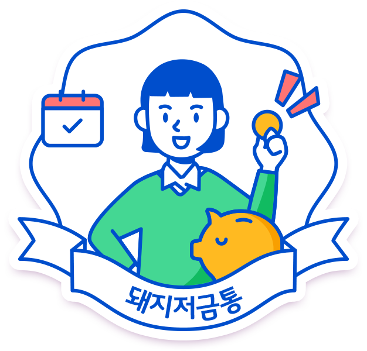

돈을 모으기보다 소비를 좋아해
카드 고지서 정독이 필요한
고지서 감시원
- 저축력
1점
- 재테크 지식력
3점
- 재테크 위험도
3점
나는 이런 사람입니다.
- 성격이 좋아서 주변에 사람이 많고 자존감이 높으며 걱정되는 일이 있어도 금방 잊으려고 해요.
- 미래에 대한 계획보다 오늘 당장이 즐거워야하고 다양한 경험이나 사고 싶은 건 사고 직접 해봐야해요.
- 성격이 급하고 계획없이 즉흥적으로 떠나는 자유로운 사람이며 단순하고 귀가 얇아요.
- 반복적이고 지루한 일보다는 한번에 몰아서 효율적으로 끝내는 것을 좋아해요.
나의 재테크 성격은
- 돈버는 것에도 열심히! 노는 것도! 돈을 쓰는 것에도 열정적이라 재테크에 관심이 없는 사람들이 많아요.
- 주변에서 좋다고 하는 재테크 상품이 있으면 일단 빠른 행동력과 실행력으로 먼저 가져가요.
- 일단 하고 싶은 건 다 해야하는 사람이라 충동적인 소액결제나 할부 결제가 많아요.
- 이론, 차트, 통계 등 딱딱한 이론서 같은 것을 좋아하지 않아 자유롭게 재테크 하려고 해요.
재테크 시 주의할 점은?
- 충동적이고 즉흥적인 소비 습관을 고치기 위해 카드내역서를 보며 나의 소비패턴을 먼저 파악해야해요.
- 귀가 얇아 남들이 좋다는 것에 바로 투자하지 말고 스스로 공부하고 나에게 맞는지 파악해야해요.
- 당장의 즐거움이 아닌 미래를 위해 재테크 계획을 세워야합니다.
함께 하면 좋은저축왕
"사실에 근거하고 사고하는 현실주의자이며 안전을 우선으로 해요.."
조금은 멀리 해야 할돼지저금통

"꼼꼼하고 성실하게 적금을 붓는 안정적인 재테크를 좋아해요."
보험 컨디션도 체크해보기! 가입한 보험을 확인하고
부족한 부분을 채워 보세요 현대해상